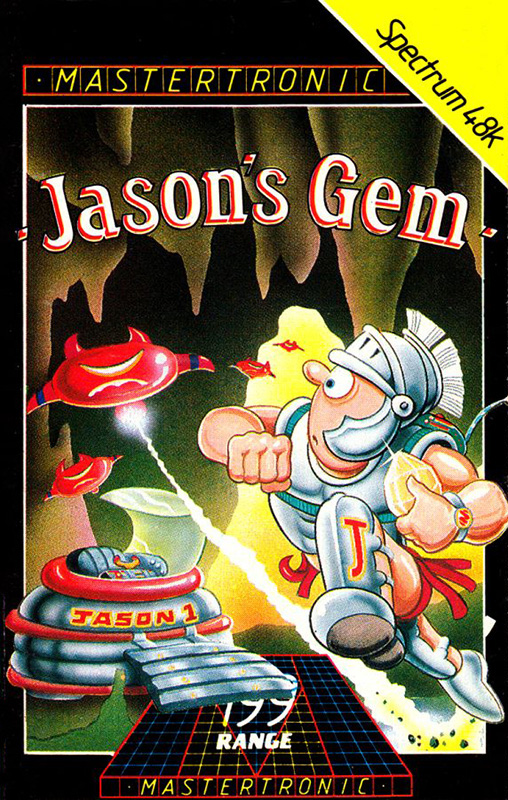
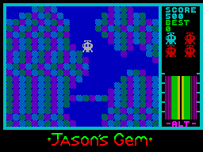

Jason's Gem


{kind=link}

| Publisher: | Mastertronic |
| Price: | £1.99 |
| Year: | 1985 |
| Source: | mastertronic.co.uk |
Only a Spanish Magazine, Micro Hobby covered this game, no English reviews at all. This is taken from mastertronic.co.uk.
Summary

Jason’s Gem is a rather dull paced game that only improves at the latter cave stages. From the very first level, the use of colour looks awful, with bright jagged squares giving it an unpolished look. There are unnecessary bonus points breaks between the descending levels which doesn’t help with the flow of gameplay action. Sadly, it’s not one that I’d recommend. 3/10
So, Without Further Ado, You Must Land Jason’s Spacecraft
The opening screen of Jason’s Gem starts with your spaceship slowly descending in altitude with the goal to safely land on the moving white platform beneath. The platform moves randomly, left and right and you need to land as closely to the centre of it as possible. Failure to do so results in a crash-landing or missing altogether!
This may seem simple in theory but as it’s randomly moving left and right, it seems more down to luck and chance, rather than skill to successfully land. It’s rather frustrating and you can quite easily lose a few lives just on the first opening stage.
Descending Into the Depths of The Caves
Once you’ve accomplished, a safe landing, the game changes. Your spaceship now has the capability to fire downwards. What you need to do is manoeuvre and shoot a passageway through so you can safely move onto the next level.
There isn’t anything that fires back at you so once you play it a few times, you’ll soon get the hang of it. These stages also have an altimeter gradually decreasing.
The Game Keeps Stopping for Bonuses!
What isn’t good is once you complete each of the descending shooting screens, a bonus score screen appears. This stops the gameplay for around 5 seconds whilst you see your score count upwards. This is not at all necessary and causes a pause that really isn’t necessary at all. For an arcade game to keep pausing after each screen is rather annoying.
The Lower Platform
When you have shot your way down to the last descending spacecraft level, there is a flashing red and yellow platform which you need to navigate onto. Fortunately, this one is static so doesn’t require luck to land on! Maybe, this is where a bit of strategy comes into play as you need to pretty much land as far to the left as you can (or else there isn’t enough room to shoot your way through the blocks beneath you).
If you lose a life on any of the screens, it places you back from you entered that screen and can therefore end up trapped. When you lose a life, your remaining spaceships (displayed on the right of the screen) turn red.
It Gets Pleasantly Speedier from Here
Once you have landed on the lower platform, Jason gets out of his spacecraft, and then walks to the right and slows moves downwards into Cave 1. From here onwards, Jason’s Gem becomes is a fast-paced platformer. Unusually for these types of games, you don’t have to collect any objects before you can exit the screen. The aim is just to get across safely and enter the flashing exit squares.
Naturally you’ll need to avoid the aliens and dangerous objects moving around, whilst at the same time avoiding the moving crushers going up and down. There are platforms to help you across certain parts of the caves and unlike most platform games, you can fall down a long distance without losing a life. Jason does, however, jump rather strangely though and takes a bit of practice. It’s a diagonal 45° angle followed by falling vertically.
Minor Sound Effects Only Throughout
The game has no music to it and the few times that you hear sound are when you fire downwards. That sounds like a short clicking noise and if you hit an object in your way, a bit of white noise.
The bonus screen sections have an annoying siren sounding noise! The only other sound you’ll hear is at the end of the game, when you collect the gem and before your spacecraft appears and starts to upwards and the planet.
Graphics
The loading screen is nice and colourful with Jason facing towards a colourful gem.
When you play the very first level, the colours are not used well. Although it’s not colour clash, they are poorly coloured and blocky. I think it’s safe to say that the programmer liked bright colours but has unfortunately used them to bad effect, especially at the start.
The graphics otherwise are acceptable with the spaceship nicely animated. The descending levels have a range of colour but the cave platform are mainly blue and white. The sprites move well.
On A Final Note
Jason’s Gem does have a couple of game styles rolled into one, so you could say it has a little bit of variety to it.
It does have one flaw, as when leaving the second screen as if you happen to go too far to the right, this causes you to lose all your remaining lives. This is because your spaceship appears is right on-top of the blocks at the top of the next screen so you can’t move or fire at all. Literally it’s game over after helplessly watch all your lives disappear in a few seconds.
There isn’t too much strategy to it, but the poetry is something different, so that does make it stand out from other games in that respect.